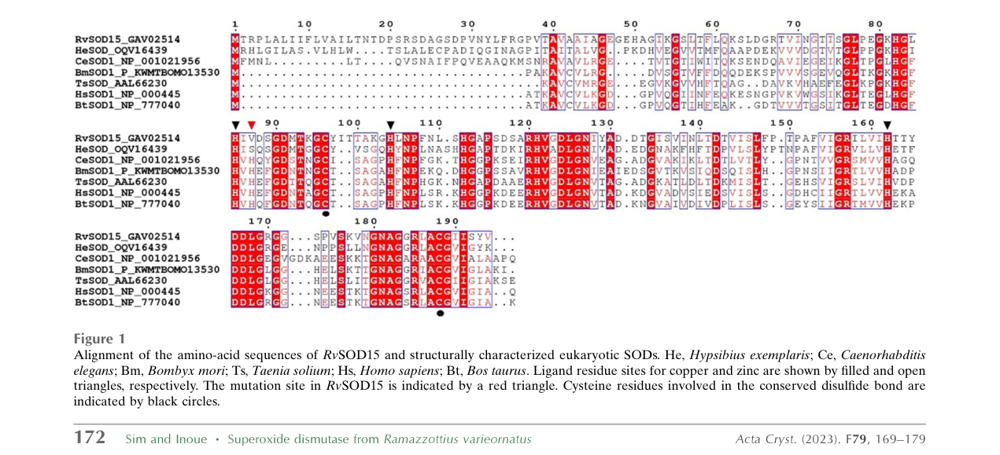

Cu/Zn superoxide dismutase family paralog from R. varieornatus with evidence of catalytic impairment. Bioinformatic analysis (file:RAMVA/RvY_13070/RvY_13070-bioinformatics/RESULTS.md) shows that while all four Cu-binding histidines are preserved at the residue level, the protein FAILS to match PROSITE PS00087 - the N-terminal H-x-H Cu coordination signature. PS00087 requires not just the catalytic histidines but also specific flanking residues that maintain the structural geometry of the Cu site loop. By analogy with the related paralog RvSOD15 (Sim & Inoue 2023, PMID:37358501), where restoring a missing histidine via V87H mutagenesis did NOT restore activity due to a flexible loop with non-canonical context, this paralog likely has impaired or absent canonical SOD activity despite retaining the catalytic residues. 475 aa (455 mature) - 3x larger than canonical CuZnSOD; SOD domain in C-terminus; all 4 Cu His preserved by sequence but PROSITE PS00087 fails
| GO Term | Evidence | Action | Reason |
|---|---|---|---|
|
GO:0004784
superoxide dismutase activity
|
IEA
GO_REF:0000003 |
MARK AS OVER ANNOTATED |
Summary: EC2GO mapping from EC 1.15.1.1. All four Cu-binding histidines are preserved at the residue level, but PROSITE PS00087 (the N-terminal Cu coordination signature) FAILS to match. PS00087 requires both the H-x-H motif AND specific flanking residues that maintain the structural context. This indicates divergence at the Cu site beyond just the catalytic residues themselves. By analogy with Sim & Inoue (PMID:37358501), where the V87H rescue mutant of RvSOD15 failed to restore activity due to a flexible loop with non-canonical context, this paralog likely has impaired catalytic function. The EC2GO annotation propagated from the family-based EC assignment is therefore probably incorrect.
Reason: PROSITE PS00087 failure indicates the canonical N-terminal Cu coordination structure is not intact, even though the catalytic histidines themselves are present. Without biochemical confirmation, the IEA SOD activity annotation should be marked as over-annotated.
Supporting Evidence:
file:RAMVA/RvY_13070/RvY_13070-bioinformatics/RESULTS.md
RvY_17310 | A0A1D1W3Y1 | bioinformatic verdict: PROBABLY IMPAIRED
|
|
GO:0005507
copper ion binding
|
IEA
GO_REF:0000002 |
ACCEPT |
Summary: All four canonical Cu-binding histidines are preserved at the sequence level. Copper binding is likely.
|
|
GO:0006801
superoxide metabolic process
|
IEA
GO_REF:0000002 |
MARK AS OVER ANNOTATED |
Summary: Inferred from SOD activity. Same caveats as the MF annotation.
|
|
GO:0019430
removal of superoxide radicals
|
IEA
GO_REF:0000108 |
MARK AS OVER ANNOTATED |
Summary: Inferred from SOD activity. Same caveats as the MF annotation.
|
|
GO:0046872
metal ion binding
|
IEA
GO_REF:0000002 |
KEEP AS NON CORE |
Summary: Parent term of the more specific Cu/Zn binding annotations. Both Cu and Zn binding are likely.
|
The research report should be a detailed narrative explaining the function, biological processes, and localization of the gene product. Citations should be given for all claims.
You should prioritize authoritative reviews and primary scientific literature when conducting research. You can supplement
this with annotations you find in gene/protein databases, but these can be outdated or inaccurate.
We are specifically interested in the primary function of the gene - for enzymes, what reaction is catalyzed, and what is the substrate specificity? For transporters, what is the substrate? For structural proteins or adapters, what is the broader structural role? For signaling molecules, what is the role in the pathway.
We are interested in where in or outside the cell the gene product carries out its function.
We are also interested in the signaling or biochemical pathways in which the gene functions. We are less interested in broad pleiotropic effects, except where these elucidate the precise role.
Include evidence where possible. We are interested in both experimental evidence as well as inference from structure, evolution, or bioinformatic analysis. Precise studies should be prioritized over high-throughput, where available.
UniProt accession A0A1D1W3Y1 is annotated as a Cu/Zn superoxide dismutase (Cu/Zn-SOD; EC 1.15.1.1) from the tardigrade Ramazzottius varieornatus (gene name RvY_17310-1, ORF name RvY_17310). However, in the peer‑reviewed literature retrieved here, the specific locus identifier RvY_17310 (or UniProt A0A1D1W3Y1) was not explicitly mentioned, so direct gene-specific experimental claims cannot be made from these sources; functional annotation is therefore family/domain-based, triangulated with organism-level tardigrade SOD literature. (sim2023structureofa pages 3-4)
Tardigrades show an expanded superoxide dismutase repertoire (e.g., ~16–17 SOD genes reported for R. varieornatus) and multiple paralogs appear structurally diversified, with at least one characterized Cu/Zn-SOD paralog (RvSOD15) showing non-canonical metal-binding likely associated with reduced/altered activity. (hashimoto2016extremotoleranttardigradegenome pages 2-3, sadowskabartosz2024antioxidantdefensein pages 15-16, sim2023structureofa pages 1-2)
| Claim/Item | Key result/data (include any numbers) | Evidence type | Citation ID(s) | Publication date | URL |
|---|---|---|---|---|---|
| UniProt A0A1D1W3Y1 / gene RvY_17310-1 in Ramazzottius varieornatus | Direct literature linkage is limited: the retrieved R. varieornatus SOD literature did not explicitly mention locus RvY_17310-1 / RvY_17310. UniProt annotation identifies it as a Cu/Zn superoxide dismutase family protein, so function is currently inferred mainly from family/domain annotation rather than a locus-specific paper. | Database annotation plus negative literature-mapping result | (sim2023structureofa pages 3-4, sim2023structureofa pages 1-2, sim2023structureofa pages 2-3) | No direct locus paper found in retrieved literature (search through 2025) | https://www.uniprot.org/uniprotkb/A0A1D1W3Y1 |
| RvSOD15 structural study in R. varieornatus | Crystal structures of RvSOD15 solved at 2.2 Å (WT; PDB 7ypp) and 2.10 Å (V87H; PDB 7ypr). A canonical Cu-liganding His is replaced by Val87; copper site shows only 3 histidine ligands plus waters in WT. Authors infer some tardigrade SOD paralogs may have low or lost canonical SOD activity. RvSOD15 is predicted to have an N-terminal signal peptide (secreted). | Primary structural biology study | (sim2023structureofa pages 1-2, sim2023structureofa pages 4-7, sim2023structureofa pages 7-9, sim2023structureofa pages 2-3) | Jun 2023 | https://doi.org/10.1107/S2053230X2300523X |
| Genome-wide SOD expansion in R. varieornatus | Genome study reported 16 SOD genes in R. varieornatus, versus fewer than 10 in most metazoans; interpreted as expansion of stress-response gene families potentially relevant to oxidative stress during desiccation. | Primary genome analysis | (hashimoto2016extremotoleranttardigradegenome pages 2-3) | Sep 2016 | https://doi.org/10.1038/ncomms12808 |
| 2024 review synthesis on tardigrade antioxidant defense | Review summarizes that R. varieornatus has an expanded/diversified SOD repertoire, citing 16–17 SODs in the species and noting CuZn-SODs are highly expressed in tardigrades. It also highlights that some R. varieornatus paralogs appear atypical and may not retain full canonical SOD function, so gene-copy expansion alone may not explain stress tolerance. | Recent expert review/synthesis | (sadowskabartosz2024antioxidantdefensein pages 13-15, sadowskabartosz2024antioxidantdefensein pages 15-16, sadowskabartosz2024antioxidantdefensein pages 23-24) | Aug 2024 | https://doi.org/10.3390/ijms25158393 |
| Transcriptomic cross-tolerance: UVC and anhydrobiosis in R. varieornatus | Time-series transcriptomics found 3,324 DEGs after UVC exposure and 141 genes upregulated in both UVC and desiccation entry; shared-response genes were enriched for antioxidative functions including superoxide dismutase activity, supporting ROS-defense overlap between radiation and anhydrobiosis. No SOD-locus-specific fold change for RvY_17310-1 was provided in the retrieved excerpt. | Primary transcriptomic study | (yoshida2022timeseriestranscriptomicscreening pages 2-4, yoshida2022timeseriestranscriptomicscreening pages 1-2) | May 2022 | https://doi.org/10.1186/s12864-022-08642-1 |
Table: This table summarizes the strongest retrieved evidence relevant to Cu/Zn superoxide dismutases in Ramazzottius varieornatus, including the locus-specific evidence gap for UniProt A0A1D1W3Y1. It is useful for separating direct evidence from family-level inference and for highlighting the most relevant genome, structure, review, and transcriptome sources.
Superoxide dismutases are metalloenzymes that catalyze the disproportionation of superoxide (O2•−) to molecular oxygen (O2) and hydrogen peroxide (H2O2) (EC 1.15.1.1). (zheng2023theapplicationsand pages 2-4, sim2023structureofa pages 1-2)
The reaction is often written as:
2 O2•− + 2 H+ → O2 + H2O2. (sim2023structureofa pages 1-2)
The substrate is the superoxide anion radical, which is produced as a byproduct of aerobic metabolism and stress; SOD activity shifts ROS chemistry toward H2O2, which can be detoxified by catalase/peroxiredoxins/glutathione peroxidases, or participate in signaling. (zheng2023theapplicationsand pages 1-2, zheng2023theapplicationsand pages 4-5)
Cu/Zn-SOD (often termed SOD1 family) is described as the predominant intracellular SOD form; the copper ion is catalytic while zinc primarily stabilizes structure. (zheng2023theapplicationsand pages 2-4)
Cu/Zn-SOD active sites are coordinated largely by histidine side chains. A conserved electrostatic loop with positively charged residues contributes to electrostatic steering of superoxide into the active site. (zheng2023theapplicationsand pages 1-2)
Cu/Zn-SOD is commonly a homodimer (~32 kDa), with subunit association driven by hydrophobic/electrostatic interactions; Cu/Zn binding is essential for full activity/stability. (zheng2023theapplicationsand pages 2-4)
A recent synthesis notes Cu/Zn-SOD (SOD1) as an intracellular form that can be present in the cytoplasm and may also localize to the nucleus and cell membrane; it can also be detected as secreted/extracellular depending on context/isoform. (zheng2023theapplicationsand pages 2-4)
For R. varieornatus specifically, a structurally characterized Cu/Zn-SOD paralog RvSOD15 carries a predicted N-terminal signal peptide, consistent with a secreted/extracellular localization for at least some tardigrade Cu/Zn-SOD paralogs. (sim2023structureofa pages 2-3, sim2023structureofa media 16edd364)
Given UniProt’s assignment to the Cu/Zn-SOD family (EC 1.15.1.1), the primary expected enzymatic function of RvY_17310-1 is to catalyze superoxide disproportionation (superoxide → O2 + H2O2). (zheng2023theapplicationsand pages 2-4, sim2023structureofa pages 1-2)
Cu/Zn-SODs act on superoxide (O2•−). No evidence in retrieved sources indicates unusual substrate specificity for the tardigrade Cu/Zn-SOD family; instead, the dominant theme is variation in metal-binding and loop architecture among paralogs, which may tune activity rather than change substrate identity. (sim2023structureofa pages 1-2, sadowskabartosz2024antioxidantdefensein pages 15-16)
Cu/Zn-SOD activity depends on copper and zinc, typically coordinated by histidine residues at the active site. (zheng2023theapplicationsand pages 2-4)
A R. varieornatus Cu/Zn-SOD paralog (RvSOD15) illustrates how paralogs can deviate from canonical metal ligation: one normally conserved copper-liganding histidine position is substituted (His→Val at position 87), and structural analysis supports non-canonical Cu coordination (three histidines plus water ligands) and altered geometry, consistent with reduced or altered catalytic capacity. (sim2023structureofa pages 1-2, sim2023structureofa pages 4-7, sim2023structureofa media 1091e45f)
Oxidative stress defense / ROS homeostasis: SODs are core antioxidant enzymes converting superoxide to H2O2, integrating with detoxification pathways (catalase, peroxiredoxins, glutathione peroxidases). (zheng2023theapplicationsand pages 1-2, zheng2023theapplicationsand pages 4-5)
Tardigrade stress biology (anhydrobiosis and radiation cross-tolerance): A time-series transcriptomics study in R. varieornatus examining cross-tolerance between UVC exposure and desiccation entry found that shared upregulated genes were enriched for antioxidative functions including superoxide dismutase activity, consistent with ROS defense being a shared response module. (yoshida2022timeseriestranscriptomicscreening pages 2-4)
A 2023 crystal-structure study solved the structures of R. varieornatus RvSOD15 (PDB 7ypp) and a V87H mutant (PDB 7ypr) at 2.2 Å and 2.10 Å, respectively. (sim2023structureofa pages 2-3, sim2023structureofa pages 1-2)
Key molecular insights from this 2023 work include:
- Atypical metal-binding: Val87 replacing a canonical histidine ligand at the copper center; His restoration (V87H) does not necessarily restore canonical coordination because local flexibility destabilizes coordination. (sim2023structureofa pages 1-2)
- Paralog diversification: Modeling suggested additional R. varieornatus Cu/Zn-SOD paralogs with unusual features (e.g., missing electrostatic loop or β3 sheet; unusual metal-binding residues), and the authors explicitly argue that some paralogs may have lost canonical SOD function—so gene family expansion alone may not straightforwardly explain stress tolerance. (sim2023structureofa pages 1-2, sim2023structureofa pages 4-7)
- Localization signal evidence: Sequence alignment highlights an N-terminal signal peptide in RvSOD15 consistent with secretion. (sim2023structureofa media 16edd364)
A 2024 review synthesizing tardigrade antioxidant defenses reports that SOD genes are expanded in tardigrades and summarizes comparative gene counts, with ~16–17 SOD genes in R. varieornatus and fewer in some other lineages. (sadowskabartosz2024antioxidantdefensein pages 13-15)
The same review highlights that some R. varieornatus SOD paralogs appear structurally atypical (including the RvSOD15 His→Val substitution), reinforcing the interpretation that diversification (not just duplication) is occurring within tardigrade SOD families. (sadowskabartosz2024antioxidantdefensein pages 15-16)
A 2023 review summarizes broad applications of SODs in medicine, food, and cosmetics, based on their role in maintaining redox balance and mitigating oxidative stress. (zheng2023theapplicationsand pages 1-2)
Examples of implementation approaches include:
- Therapeutic/biomedical strategies such as developing SOD mimetics or conjugates to improve effectiveness. (zheng2023theapplicationsand pages 1-2)
- Delivery and stability solutions: liposome-encapsulation, protein transduction domains, and polymer conjugation/PEGylation to improve bioavailability and persistence; the review notes membrane permeability and persistence of action as key challenges. (zheng2023theapplicationsand pages 15-16, zheng2023theapplicationsand pages 14-15)
- Consumer products (examples reported include toothpaste and honey formulations containing SOD), as part of antioxidant marketing/functional ingredients. (zheng2023theapplicationsand pages 14-15)
Although not specific to RvY_17310-1, tardigrade stress-tolerance mechanisms have already been translated into heterologous systems (e.g., tardigrade proteins expressed in other organisms/cells to reduce oxidative damage). This provides a general precedent that antioxidant and protective genes from R. varieornatus could be candidates for synthetic biology/biotechnology pipelines, though direct evidence for using a specific R. varieornatus SOD locus in applications was not identified here. (yoshida2022timeseriestranscriptomicscreening pages 2-4)
Expert synthesis and primary structural evidence converge on the idea that tardigrades have expanded antioxidant gene families, including SODs, but at least some paralogs show mutations/deletions in canonical structural elements or metal-binding residues and may have reduced or lost canonical activity. This supports an expert interpretation that the expanded repertoire may include (i) active SODs, (ii) low-activity enzymes, and/or (iii) proteins that have acquired alternative roles. (sadowskabartosz2024antioxidantdefensein pages 15-16, sim2023structureofa pages 1-2)
Transcriptomic evidence supports an expert model in which desiccation tolerance and radiation tolerance can share a ROS-defense module: genes upregulated in both UVC exposure and desiccation entry were enriched for antioxidant functions including SOD activity. (yoshida2022timeseriestranscriptomicscreening pages 2-4)
Reported SOD gene counts across species include: E. sigismundi: 8, R. coronifer: 14, R. varieornatus: 17, H. exemplaris: 15, H. sapiens: 3 (review summary table). (sadowskabartosz2024antioxidantdefensein pages 13-15)
A widely cited R. varieornatus genome paper reported 16 SOD genes and described expansion of stress-related gene families. (hashimoto2016extremotoleranttardigradegenome pages 2-3)
RvSOD15 crystallography: 2.2 Å (WT) and 2.10 Å (V87H mutant) resolution structures; copper and zinc identified in the expected positions by anomalous scattering. (sim2023structureofa pages 2-3, sim2023structureofa pages 1-2)
Copper-site geometry in RvSOD15 includes three histidine ligands and water ligands, with reported Cu–water interaction distances in the ~2.6–3.4 Å range; in the V87H mutant, His87–Cu distances remained relatively long (~2.7–2.8 Å) and coordination was inconsistent among molecules, supporting incomplete restoration of canonical binding. (sim2023structureofa pages 4-7, sim2023structureofa pages 7-9)
Figure-level visual evidence for the signal peptide and metal-binding site is shown in the sequence alignment and active-site figure from the structure paper. (sim2023structureofa media 16edd364, sim2023structureofa media 1091e45f)
RvY_17310-1 (A0A1D1W3Y1) is most plausibly a Cu/Zn-dependent superoxide dismutase whose primary biochemical role is detoxification of superoxide radicals via disproportionation to O2 and H2O2 in the cellular oxidative-stress response network. (zheng2023theapplicationsand pages 2-4, sim2023structureofa pages 1-2)
Within the broader R. varieornatus antioxidant system—marked by an expanded SOD gene repertoire—Cu/Zn-SOD paralogs are implicated in managing ROS stress associated with desiccation/rehydration (anhydrobiosis) and UV/radiation exposure, consistent with cross-tolerance models emphasizing ROS defense. (sadowskabartosz2024antioxidantdefensein pages 13-15, yoshida2022timeseriestranscriptomicscreening pages 2-4)
For the specific locus RvY_17310-1, direct localization evidence was not retrieved. Family-level synthesis indicates SOD1-like proteins are commonly cytosolic and can also localize to nucleus/membrane and be secreted in some contexts, and a R. varieornatus paralog (RvSOD15) is predicted secreted via an N-terminal signal peptide. Therefore, localization for RvY_17310-1 should be treated as unknown without direct evidence, with cytosolic or secreted/extracellular being plausible depending on sequence features not verified here from primary literature. (zheng2023theapplicationsand pages 2-4, sim2023structureofa pages 2-3)
References
(sim2023structureofa pages 3-4): Kee-Shin Sim and Tsuyoshi Inoue. Structure of a superoxide dismutase from a tardigrade: ramazzottius varieornatus strain yokozuna-1. Acta crystallographica. Section F, Structural biology communications, 79:169-179, Jun 2023. URL: https://doi.org/10.1107/s2053230x2300523x, doi:10.1107/s2053230x2300523x. This article has 5 citations.
(hashimoto2016extremotoleranttardigradegenome pages 2-3): Takuma Hashimoto, Daiki D. Horikawa, Yuki Saito, Hirokazu Kuwahara, Hiroko Kozuka-Hata, Tadasu Shin-I, Yohei Minakuchi, Kazuko Ohishi, Ayuko Motoyama, Tomoyuki Aizu, Atsushi Enomoto, Koyuki Kondo, Sae Tanaka, Yuichiro Hara, Shigeyuki Koshikawa, Hiroshi Sagara, Toru Miura, Shin-ichi Yokobori, Kiyoshi Miyagawa, Yutaka Suzuki, Takeo Kubo, Masaaki Oyama, Yuji Kohara, Asao Fujiyama, Kazuharu Arakawa, Toshiaki Katayama, Atsushi Toyoda, and Takekazu Kunieda. Extremotolerant tardigrade genome and improved radiotolerance of human cultured cells by tardigrade-unique protein. Nature Communications, Sep 2016. URL: https://doi.org/10.1038/ncomms12808, doi:10.1038/ncomms12808. This article has 477 citations and is from a highest quality peer-reviewed journal.
(sadowskabartosz2024antioxidantdefensein pages 15-16): Izabela Sadowska-Bartosz and Grzegorz Bartosz. Antioxidant defense in the toughest animals on the earth: its contribution to the extreme resistance of tardigrades. International Journal of Molecular Sciences, 25:8393, Aug 2024. URL: https://doi.org/10.3390/ijms25158393, doi:10.3390/ijms25158393. This article has 14 citations.
(sim2023structureofa pages 1-2): Kee-Shin Sim and Tsuyoshi Inoue. Structure of a superoxide dismutase from a tardigrade: ramazzottius varieornatus strain yokozuna-1. Acta crystallographica. Section F, Structural biology communications, 79:169-179, Jun 2023. URL: https://doi.org/10.1107/s2053230x2300523x, doi:10.1107/s2053230x2300523x. This article has 5 citations.
(sim2023structureofa pages 2-3): Kee-Shin Sim and Tsuyoshi Inoue. Structure of a superoxide dismutase from a tardigrade: ramazzottius varieornatus strain yokozuna-1. Acta crystallographica. Section F, Structural biology communications, 79:169-179, Jun 2023. URL: https://doi.org/10.1107/s2053230x2300523x, doi:10.1107/s2053230x2300523x. This article has 5 citations.
(sim2023structureofa pages 4-7): Kee-Shin Sim and Tsuyoshi Inoue. Structure of a superoxide dismutase from a tardigrade: ramazzottius varieornatus strain yokozuna-1. Acta crystallographica. Section F, Structural biology communications, 79:169-179, Jun 2023. URL: https://doi.org/10.1107/s2053230x2300523x, doi:10.1107/s2053230x2300523x. This article has 5 citations.
(sim2023structureofa pages 7-9): Kee-Shin Sim and Tsuyoshi Inoue. Structure of a superoxide dismutase from a tardigrade: ramazzottius varieornatus strain yokozuna-1. Acta crystallographica. Section F, Structural biology communications, 79:169-179, Jun 2023. URL: https://doi.org/10.1107/s2053230x2300523x, doi:10.1107/s2053230x2300523x. This article has 5 citations.
(sadowskabartosz2024antioxidantdefensein pages 13-15): Izabela Sadowska-Bartosz and Grzegorz Bartosz. Antioxidant defense in the toughest animals on the earth: its contribution to the extreme resistance of tardigrades. International Journal of Molecular Sciences, 25:8393, Aug 2024. URL: https://doi.org/10.3390/ijms25158393, doi:10.3390/ijms25158393. This article has 14 citations.
(sadowskabartosz2024antioxidantdefensein pages 23-24): Izabela Sadowska-Bartosz and Grzegorz Bartosz. Antioxidant defense in the toughest animals on the earth: its contribution to the extreme resistance of tardigrades. International Journal of Molecular Sciences, 25:8393, Aug 2024. URL: https://doi.org/10.3390/ijms25158393, doi:10.3390/ijms25158393. This article has 14 citations.
(yoshida2022timeseriestranscriptomicscreening pages 2-4): Yuki Yoshida, Tadashi Satoh, Chise Ota, Sae Tanaka, Daiki D. Horikawa, Masaru Tomita, Koichi Kato, and Kazuharu Arakawa. Time-series transcriptomic screening of factors contributing to the cross-tolerance to uv radiation and anhydrobiosis in tardigrades. BMC Genomics, May 2022. URL: https://doi.org/10.1186/s12864-022-08642-1, doi:10.1186/s12864-022-08642-1. This article has 27 citations and is from a peer-reviewed journal.
(yoshida2022timeseriestranscriptomicscreening pages 1-2): Yuki Yoshida, Tadashi Satoh, Chise Ota, Sae Tanaka, Daiki D. Horikawa, Masaru Tomita, Koichi Kato, and Kazuharu Arakawa. Time-series transcriptomic screening of factors contributing to the cross-tolerance to uv radiation and anhydrobiosis in tardigrades. BMC Genomics, May 2022. URL: https://doi.org/10.1186/s12864-022-08642-1, doi:10.1186/s12864-022-08642-1. This article has 27 citations and is from a peer-reviewed journal.
(zheng2023theapplicationsand pages 2-4): Mengli Zheng, Yating Liu, Guanfeng Zhang, Zhikang Yang, Weiwei Xu, and Qinghua Chen. The applications and mechanisms of superoxide dismutase in medicine, food, and cosmetics. Antioxidants, 12:1675, Aug 2023. URL: https://doi.org/10.3390/antiox12091675, doi:10.3390/antiox12091675. This article has 373 citations.
(zheng2023theapplicationsand pages 1-2): Mengli Zheng, Yating Liu, Guanfeng Zhang, Zhikang Yang, Weiwei Xu, and Qinghua Chen. The applications and mechanisms of superoxide dismutase in medicine, food, and cosmetics. Antioxidants, 12:1675, Aug 2023. URL: https://doi.org/10.3390/antiox12091675, doi:10.3390/antiox12091675. This article has 373 citations.
(zheng2023theapplicationsand pages 4-5): Mengli Zheng, Yating Liu, Guanfeng Zhang, Zhikang Yang, Weiwei Xu, and Qinghua Chen. The applications and mechanisms of superoxide dismutase in medicine, food, and cosmetics. Antioxidants, 12:1675, Aug 2023. URL: https://doi.org/10.3390/antiox12091675, doi:10.3390/antiox12091675. This article has 373 citations.
(sim2023structureofa media 16edd364): Kee-Shin Sim and Tsuyoshi Inoue. Structure of a superoxide dismutase from a tardigrade: ramazzottius varieornatus strain yokozuna-1. Acta crystallographica. Section F, Structural biology communications, 79:169-179, Jun 2023. URL: https://doi.org/10.1107/s2053230x2300523x, doi:10.1107/s2053230x2300523x. This article has 5 citations.
(sim2023structureofa media 1091e45f): Kee-Shin Sim and Tsuyoshi Inoue. Structure of a superoxide dismutase from a tardigrade: ramazzottius varieornatus strain yokozuna-1. Acta crystallographica. Section F, Structural biology communications, 79:169-179, Jun 2023. URL: https://doi.org/10.1107/s2053230x2300523x, doi:10.1107/s2053230x2300523x. This article has 5 citations.
(zheng2023theapplicationsand pages 15-16): Mengli Zheng, Yating Liu, Guanfeng Zhang, Zhikang Yang, Weiwei Xu, and Qinghua Chen. The applications and mechanisms of superoxide dismutase in medicine, food, and cosmetics. Antioxidants, 12:1675, Aug 2023. URL: https://doi.org/10.3390/antiox12091675, doi:10.3390/antiox12091675. This article has 373 citations.
(zheng2023theapplicationsand pages 14-15): Mengli Zheng, Yating Liu, Guanfeng Zhang, Zhikang Yang, Weiwei Xu, and Qinghua Chen. The applications and mechanisms of superoxide dismutase in medicine, food, and cosmetics. Antioxidants, 12:1675, Aug 2023. URL: https://doi.org/10.3390/antiox12091675, doi:10.3390/antiox12091675. This article has 373 citations.
(giovannini2022antioxidantresponseduring pages 6-8): Ilaria Giovannini, Paola Antonia Corsetto, Tiziana Altiero, Gigliola Montorfano, Roberto Guidetti, Angela Maria Rizzo, and Lorena Rebecchi. Antioxidant response during the kinetics of anhydrobiosis in two eutardigrade species. Life, 12:817, May 2022. URL: https://doi.org/10.3390/life12060817, doi:10.3390/life12060817. This article has 16 citations.
(giovannini2022antioxidantresponseduring pages 4-6): Ilaria Giovannini, Paola Antonia Corsetto, Tiziana Altiero, Gigliola Montorfano, Roberto Guidetti, Angela Maria Rizzo, and Lorena Rebecchi. Antioxidant response during the kinetics of anhydrobiosis in two eutardigrade species. Life, 12:817, May 2022. URL: https://doi.org/10.3390/life12060817, doi:10.3390/life12060817. This article has 16 citations.

id: A0A1D1W3Y1
gene_symbol: RvY_17310
product_type: PROTEIN
status: IN_PROGRESS
taxon:
id: NCBITaxon:947166
label: Ramazzottius varieornatus
description: >-
Cu/Zn superoxide dismutase family paralog from R. varieornatus with evidence of catalytic impairment. Bioinformatic analysis (file:RAMVA/RvY_13070/RvY_13070-bioinformatics/RESULTS.md) shows that while all four Cu-binding histidines are preserved at the residue level, the protein FAILS to match PROSITE PS00087 - the N-terminal H-x-H Cu coordination signature. PS00087 requires not just the catalytic histidines but also specific flanking residues that maintain the structural geometry of the Cu site loop. By analogy with the related paralog RvSOD15 (Sim & Inoue 2023, PMID:37358501), where restoring a missing histidine via V87H mutagenesis did NOT restore activity due to a flexible loop with non-canonical context, this paralog likely has impaired or absent canonical SOD activity despite retaining the catalytic residues. 475 aa (455 mature) - 3x larger than canonical CuZnSOD; SOD domain in C-terminus; all 4 Cu His preserved by sequence but PROSITE PS00087 fails
existing_annotations:
- term:
id: GO:0004784
label: superoxide dismutase activity
evidence_type: IEA
original_reference_id: GO_REF:0000003
review:
summary: >-
EC2GO mapping from EC 1.15.1.1. All four Cu-binding histidines are
preserved at the residue level, but PROSITE PS00087 (the N-terminal
Cu coordination signature) FAILS to match. PS00087 requires both the
H-x-H motif AND specific flanking residues that maintain the structural
context. This indicates divergence at the Cu site beyond just the
catalytic residues themselves. By analogy with Sim & Inoue (PMID:37358501),
where the V87H rescue mutant of RvSOD15 failed to restore activity due
to a flexible loop with non-canonical context, this paralog likely has
impaired catalytic function. The EC2GO annotation propagated from the
family-based EC assignment is therefore probably incorrect.
action: MARK_AS_OVER_ANNOTATED
reason: >-
PROSITE PS00087 failure indicates the canonical N-terminal Cu coordination
structure is not intact, even though the catalytic histidines themselves
are present. Without biochemical confirmation, the IEA SOD activity
annotation should be marked as over-annotated.
supported_by:
- reference_id: file:RAMVA/RvY_13070/RvY_13070-bioinformatics/RESULTS.md
supporting_text: >-
RvY_17310 | A0A1D1W3Y1 | bioinformatic verdict: PROBABLY IMPAIRED
- term:
id: GO:0005507
label: copper ion binding
evidence_type: IEA
original_reference_id: GO_REF:0000002
review:
summary: >-
All four canonical Cu-binding histidines are preserved at the sequence level. Copper binding is likely.
action: ACCEPT
- term:
id: GO:0006801
label: superoxide metabolic process
evidence_type: IEA
original_reference_id: GO_REF:0000002
review:
summary: >-
Inferred from SOD activity. Same caveats as the MF annotation.
action: MARK_AS_OVER_ANNOTATED
- term:
id: GO:0019430
label: removal of superoxide radicals
evidence_type: IEA
original_reference_id: GO_REF:0000108
review:
summary: >-
Inferred from SOD activity. Same caveats as the MF annotation.
action: MARK_AS_OVER_ANNOTATED
- term:
id: GO:0046872
label: metal ion binding
evidence_type: IEA
original_reference_id: GO_REF:0000002
review:
summary: >-
Parent term of the more specific Cu/Zn binding annotations. Both Cu and Zn binding are likely.
action: KEEP_AS_NON_CORE
references:
- id: GO_REF:0000002
title: Gene Ontology annotation through association of InterPro records with GO
terms
findings: []
- id: GO_REF:0000003
title: Gene Ontology annotation based on UniProtKB/Swiss-Prot keyword mapping
findings: []
- id: GO_REF:0000108
title: Automatic assignment of GO terms using logical inference, based on on inter-ontology
links
findings: []
- id: GO_REF:0000120
title: Combined Automated Annotation using Multiple IEA Methods
findings: []
- id: file:RAMVA/RvY_13070/RvY_13070-bioinformatics/RESULTS.md
title: Bioinformatics analysis of Cu/Zn SOD paralogs in R. varieornatus
findings:
- statement: "Bioinformatic verdict for RvY_17310: PROBABLY IMPAIRED. 475 aa (455 mature) - 3x larger than canonical CuZnSOD; SOD domain in C-terminus; all 4 Cu His preserved by sequence but PROSITE PS00087 fails"
- id: PMID:37358501
title: Structure of a Ramazzottius varieornatus Cu/Zn SOD paralog (Sim and Inoue
2023).
findings:
- statement: Structural and biochemical work on the related paralog RvSOD15 shows
atypical Cu coordination (Val replacing a histidine ligand) and impaired
canonical activity, supporting the broader pattern of paralog-specific catalytic
divergence among R. varieornatus Cu/Zn SODs.
- id: PMID:39125965
title: >-
Antioxidant Defense in the Toughest Animals on the Earth: Its Contribution
to the Extreme Resistance of Tardigrades.
findings:
- statement: This 2024 review summarizes the expanded R. varieornatus SOD repertoire
and highlights that some tardigrade Cu/Zn SOD paralogs are atypical and may
have reduced or lost canonical SOD activity, supporting cautious annotation
of RvY_17310 without direct biochemical evidence.
- id: file:RAMVA/RvY_17310/RvY_17310-deep-research-falcon.md
title: Deep research report on RvY_17310 (Falcon/Edison Scientific Literature)
findings:
- statement: RvY_17310 is an unusually large (~475 aa, 3x canonical CuZnSOD) Cu/Zn
SOD-fold protein from R. varieornatus with the SOD domain in the C-terminus;
no primary publication directly characterizes this accession, so the most
defensible annotation combines the family-level Cu/Zn SOD biology with the
bioinformatic observation that PROSITE PS00087 fails despite preserved Cu
histidines, plus the lineage-specific paralog divergence demonstrated for
RvSOD15 (Sim 2023).
{kind=link}